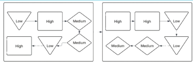
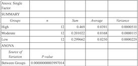

1 |
Gathered materials consisting of:
- Laptop: Macbook Air M3 chip
- Apple Charger Always Plugged In
- Python Libraries
- Special and Specific Packages for ML
|
|
2 |
Deciding what model to choose:
- Make list of model options
- Weighing out advatages and disadvantages of each
- Shorten list to 3 best models
- Compare limiting factors in models
Chose Random Forrest Regressor as shown in picture.
|
 |
3 |
Go Through 4 Steps of Data Preprocessing
- Data Cleaning
- Data Reduction
- Data Transformation
- Data Integration
|
 |
4 |
Followed the Sequence:
- Data Splitting and Partioning
- Starting Training Sequence
- Model Optimization
- Start Evaluation Process
|
 |
5 |
How Data was Partioned:
- Started with Scrambled Data
- Seperate by PM2.5 Concentration
- Organize from High Concentration to Low
|
 |
6 |
Data Was Analyzed Using an Anova 1-var Test |
 |